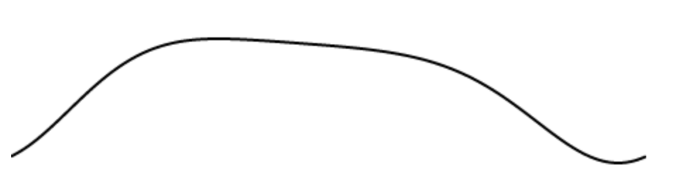

What is a Tempest Stroke?
Named for its creator, Tempest MAx, a TempestStroke is a behavior that allows specifying oscillatory motion on an arbitrary number of axes with a formula loosely based on orbital motion calculations. The formula is:

Where θ is the angle in radians, p is the phase, and c is the eccentricity. Here is a simple graph that shows how these parameters effect the shape of the motion (try tweaking phase and eccentricity):
Setup
To use TempestStroke, you must import it. This can be done at the same time that you import the Ayva class. For example:
import Ayva, { TempestStroke } from 'https://unpkg.com/ayvajs';
Note: Ayva is the default export of ayvajs, while TempestStroke is a named export. This is the reason TempestStroke is enclosed in curly brackets.
Once TempestStroke is imported, you can create new strokes using TempestStroke's constructor, which takes a configuration object and bpm (beats per minute).
const myStroke = new TempestStroke({
stroke: {
from: 0, // Start of the range of motion [0 - 1]
to: 1, // End of the range of motion [0 - 1]
phase: 0.3,
ecc: 0.7
}
}, 30);
ayva.do(myStroke);
This would cause Ayva to perform a 30 bpm stroke with motion that looks like this:
You can add motion to as many axes as you like with various parameters. The following example demonstrates an orbit grind on the axes available in an OSR2+:
ayva.do(new TempestStroke({
stroke: { from: 0.0, to: 0.3, ecc: 0.3 },
roll: { from: 0.1, to: 0.9, phase: 1.0, ecc: -0.3 },
pitch: { from: 0.9, to: 0.1, ecc: -0.3 }
}));
Note: only the from and to properties are required for an axis. phase and eccentricity both default to 0. The default for bpm is 60.
Shift
You may sometimes want to do a proper phase shift of the wave. Because of its position in the formula, changing the phase parameter may not always do this (because of the eccentricity). You can add a constant to the angle θ with the shift parameter, specified in radians:
ayva.do(new TempestStroke({
stroke: {
from: 0,
to: 1,
phase: -1,
ecc: 2,
shift: Math.PI / 2 // Shift the function by 90 degrees.
}
}));
Built-in Patterns
There are some built-in patterns that can be referenced by name:
// Execute an orbit-grind at 24 bpm
ayva.do(new TempestStroke('orbit-grind', 24));
Here is the full list of available patterns:
back-thrust-down
back-thrust-down-swirl
diagonal-down-back
diagonal-down-forward
down-backward
down-forward
forward-back-grind
forward-back-tease
lean-forward-thrust-down
lean-forward-thrust-down-swirl
left-right-tease
orbit-grind
orbit-tease
swirl-tease
thrust-forward
thrust-forward-swirl
vortex-tease
Explore!
Customizing Built-in Patterns
You can get the parameters for a built-in pattern as a starting point by using TempestStroke.library:
// Get a copy of the built-in orbit grind parameters.
const myOrbitGrind = TempestStroke.library['orbit-grind'];
// Tweak the range of the stroke axis of the orbit grind to be wider.
// Library pattern axis names use the machine names (i.e. "L0" instead of "stroke")
myOrbitGrind.L0.to = 1;
ayva.do(new TempestStroke(myOrbitGrind, 30));
Value Provider
Internally, TempestStroke uses a value provider to describe Tempest Motion. This value provider is available to be used independently of a TempestStroke in your own moves. See the API Documentation for Ayva.tempestMotion().